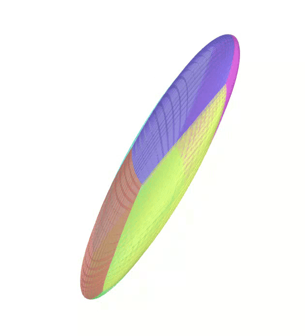

Objective
PEIBOS is a C++ library that provides a simple and efficient way to compute the Parallelepipedic Enclosure of the Image of the BOundary of a Set.
All the source code is available on this repository.
As this library requires both the CAPD and the CODAC (version 2) libraries, the main functions are provided below for any user to adapt them to their own needs.
Considering an initial set \(X_0\), two main use cases are treated by PEIBOS:
- Considering a function \(f\), compute the set \( Y = \{f(x) \mid x \in X_0\ \} \).
- Considering a dynamical equation \( \dot{x} = \gamma(x) \) and a time \( t \), compute the set \( X_t = \{x(t) \mid x(0) \in X_0\} \).
Case 1
Consider the unit sphere as initial set and the function:
\[
f(x) = \begin{pmatrix}
y_1^2 - y_2^2 + y_1 \\
2y_1y_2 + y_2 \\
y_3
\end{pmatrix}
\]
The Atlas used by PEIBOS and the result the computation are shown below:


The PEIBOS function called in this case is:
void PEIBOS(AnalyticFunction f, AnalyticFunction& psi_0, Matrix generators , double epsilon, string output_name)
{
// Grpahical output
Figure3D output(output_name);
output.draw_axes();
// Generate the symmetries from the generators
vector symmetries = generate_symmetries(generators, psi_0);
for (int i = 0; i < symmetries.size(); i++)
{
IntervalMatrix symmetry = symmetries[i];
for (double t1 = -1; t1 < 1; t1 += epsilon)
{
for (double t2 = -1;t2 < 1; t2+=epsilon)
{
IntervalVector X({{t1,t1+epsilon},{t2,t2+epsilon}});
IntervalVector Y = symmetry*psi_0.eval(X);
IntervalMatrix JJf=f.diff(Y);
auto xc = X.mid();
auto yc = (symmetry*psi_0.eval(xc)).mid();
IntervalMatrix JJf_punc=f.diff(yc).mid();
// Center of the parallelepiped
Vector z = f.eval(yc).mid();
// Maximum error computation
double rho = error( JJf, JJf_punc, psi_0, symmetry, X);
IntervalMatrix Jz = (JJf_punc * symmetry*psi_0.diff(X)).mid();
// Inflation of the parallelepiped
Matrix A = inflate_flat_parallelepiped(Jz, epsilon, rho);
output.draw_parallelepiped(z, A, peibos_cmap().color(((double)i)/((double)symmetries.size()-1.0)));
}
}
}
}
Case 2
Consider the unit sphere as initial set and the dynamical equation of the Lorenz system:
\[
\dot{x}=\gamma(x) = \begin{pmatrix}
\sigma (x_2 - x_1) \\
x_1 (\rho - x_3) - x_2 \\
x_1 x_2 - \beta x_3
\end{pmatrix}
\]
The Atlas used by PEIBOS and the result of the integration after 0.1s are shown below:

The PEIBOS function called in this case is:
void PEIBOS(capd::IMap& gamma, double tf, AnalyticFunction& psi_0, Matrix generators , double epsilon, string output_name)
{
// Grpahical output
Figure3D output(output_name);
output.draw_axes();
// CAPD solver setup
capd::IOdeSolver solver(gamma, 20);
solver.setAbsoluteTolerance(1e-20);
solver.setRelativeTolerance(1e-20);
capd::ITimeMap timeMap(solver);
capd::ITimeMap timeMap_punc(solver);
capd::interval initialTime(0.);
capd::interval finalTime(tf);
// Generate the symmetries from the generators
vector symmetries = generate_symmetries(generators, psi_0);
for (int i = 0; i < symmetries.size(); i++)
{
IntervalMatrix symmetry = symmetries[i];
for (double t1 = -1; t1 < 1; t1 += epsilon)
{
for (double t2 = -1;t2 < 1; t2+=epsilon)
{
// To get the flow function and its Jacobian (monodromy matrix) for [x]
IntervalVector X({{t1,t1+epsilon},{t2,t2+epsilon}});
IntervalVector Y = symmetry*psi_0.eval(X);
capd::IMatrix monodromyMatrix(3,3);
capd::ITimeMap::SolutionCurve solution(initialTime);
capd::IVector c(3);
c[0] = to_capd(Y[0]);
c[1] = to_capd(Y[1]);
c[2] = to_capd(Y[2]);
capd::C1Rect2Set s(c);
timeMap(finalTime, s, solution);
capd::IVector result = timeMap(finalTime, s, monodromyMatrix);
IntervalMatrix JJf=to_codac(monodromyMatrix);
// To get the flow function and its Jacobian (monodromy matrix) for x_hat
auto xc = X.mid();
auto yc = (symmetry*psi_0.eval(xc)).mid();
capd::IMatrix monodromyMatrix_punc(3,3);
capd::ITimeMap::SolutionCurve solution_punct(initialTime);
capd::IVector c_punct(3);
c_punct[0] = to_capd(yc[0]);
c_punct[1] = to_capd(yc[1]);
c_punct[2] = to_capd(yc[2]);
capd::C1Rect2Set s_punct(c_punct);
timeMap_punc(finalTime, s_punct, solution_punct);
capd::IVector result_punct = timeMap_punc(finalTime, s_punct, monodromyMatrix_punc);
IntervalMatrix JJf_punc=to_codac(monodromyMatrix_punc);
// Center of the parallelepiped
Vector z = Vector(to_codac(result).mid());
// Maximum error computation
double rho = error( JJf, JJf_punc, psi_0, symmetry, X);
IntervalMatrix Jz = (JJf_punc * symmetry*psi_0.diff(X)).mid();
// Inflation of the parallelepiped
Matrix A = inflate_flat_parallelepiped(Jz, epsilon, rho);
output.draw_parallelepiped(z, A, peibos_cmap().color(((double)i)/((double)symmetries.size()-1.0)));
}
}
}
}